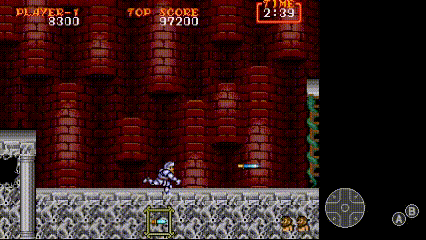

There is an INTERNAL RANK, which means the game gets harder the longer you survive, and it goes back to the base rank once you die.
In general, all enemies become faster and numerous as your rank increases, same for projectiles, and patterns could change.
We will manipulate the rank during the speedrun to make certain sections a bit easier, that means taking intentional deaths.
The game has 5 stages, each stage with one checkpoint, and a boss at the end. It has 2 loops, which means you have to beat the game twice. There are different weapons with respective magic, and steel and gold armor. Magic will be unlocked while wearing gold armor. You lose your armor if you get hit once, and you die if you get hit without armor. You must have the psycho cannon weapon at the end to enter the final boss room. Weapons and armor can be found on chests that you can reveal when you cross an invisible trigger, and they will contain different things depending on the armor you are wearing and the order you reveal them.
LEARNING TIPS
It's hard to learn this game by memory since it's strongly RNG based. The best way to learn is experiencing the game in every rank, so keep playing it if you die, reset the least you can.
Having a basic knowledge of the stages, like the checkpoints and chest triggers, the chest's char so you can recover armor and switch weapons if needed in every state will be crucial. Most of the times having a global understanding of enemies is better than just learning patterns that could fail, it's really good to learn what to do in case of emergencies, they will happen often! I will show you as many scenarios that beginners struggle with very often and how to fix it!
I made a big section in this guide about understanding arremer's moveset that works very good even if doing a pattern fails. These are the kind of things I will show in the guide.
I divided each stage in two sections: FAST or SAFE. The fast is the proper strategy for the stage and the safe is an alternative version which is easier for beginners.
Jumping is faster than walking. The extra speed is significant enough to skip certain spawns and is required for some strategies, since the speedrun is based on Arthur's current location. Getting hit, stopping somewhere, walking or slowing down will mess up things. It will affect enemy patterns, spawns.. Then it's 'improvisation time'. But I got you covered!
You can buffer a jump by holding the jump button in the ‘’ready go’’ screen.
Pressing the shoot button spawns your projectiles immediately, but there is a significant number of frames Arthur spends locked in the attack animation afterwards. These attack animations can be cancelled by tapping left/right/down or jumping.
HITBOXES. There is jank hitboxes ONLY in the genesis/megadrive version. These affect projectiles such as fireballs and beelzebub projectiles.
You have infinite continues. In the game over screen you should press start, pressing the shoot button will drop the timer down to 0 real quick.
WEAPONS
There are 7 weapons in this game, the lance, the dagger, the axe, the holy water, the discuss, the sword and finally the last weapon psycho cannon. Weapons can be found on chests or dropped by enemies that carry a pot. The weapons you find are completely random, but holding certain weapons give more probability of finding other specific ones.
Every weapon of the game is unique and have different specs and magic. You can only cast magic with gold armor. After casting magic, you have a certain amount of i-frames that will vary depending on the weapon. (This is important, since we will be using the i-frames to dodge enemies/projectiles)
Projectiles deal the same damage independently from the armor, except the psycho cannon, which deals more damage at point blank and increases the range depending on the current armor.
We are going to focus mainly on three weapons, the DAGGER, which is the main weapon we want, and alternative the LANCE as a backup, and finally the PSYCHO CANNON. Holding the discuss and the axe gives more probablities to spawn the dagger, it's a risky play but have it in mind.
DAGGER

LANCE
This is our main weapon. We will farm it in level 3. Three projectiles can be on screen at the same time, so if you mash the button, Arthur will get stuck in the shooting animation but won’t have daggers left.
To prevent that, you can spread the daggers a little bit by pressing the shoot button slower.
Mashing in front of walls or enemies increases the DPS.
You can also throw low daggers if you press shoot and then jump. (Important)
DAGGER MAGIC Arthur creates an invincible clone for a short amount of time that mimics arthur's movement with a little bit of delay. After casting the clone you have some i-frames. The clone can get stuck shooting towards the opposite direction. To fix that, just stop shooting, let the clone turn around and shoot again.
This weapon is the second best. Its dps is not that high as the dagger. This should be the speed you shoot at to spread the lances in a more uniform way.
LANCE MAGIC
Arthur casts a powerful lightning that deals damage from above and to the sides. You have less i-frames after casting than the dagger magic. It has the ability to kill bosses and strong enemies in one hit if you activate the magic when you are very very close to the enemies, so hold the magic and wait until they move closer to you.
OTHERS
The AXE, SWORD and HOLYWATER magic share this property, where they will do a one hit KO if the enemies get closer. If you are holding axe or discuss, it increases the chances to get a dagger.
Axe projectiles pierce through enemies, the discuss trails the ground annd collides with walls/enemies and the sword is the only weapon that deals 2 damage.
Mentioning that the DISCUSS magic can one shot an arremer if placed correctly.
PSYCHO CANNON
You must be holding this weapon before fighting beelzebub on loop 2 to enter to the final boss room. If you defeat Beelzebub without Psycho cannon in loop 2 , you will get sent to the beginning of the level.
All chest that contain a weapon in loop 2 will turn into a psycho cannon as long as you open the chest while wearing gold armor.
The psycho cannon deals more damage at point blank, and it can destroy projectiles. It has longer range if you are wearing gold armor.
CHEST
The chests are hidden in specific spots on every stage. To reveal them, you have to cross the corresponding invisible trigger and they will appear always on the same spot. Chests can contain weapons, armor and an evil magician that attacks you.
What those chest contains depends on the current armor Arthur is wearing. This is the chart that shows what each chest will contain, and it cycles.
The numbers mean the order you reveal them, so it is important to memorize this chart so you can count how many chest you revealed and which armor situation you are in to know what is on the next chest. It's important to reveal chest all the time so in case you lose the armor, you can recover it in the future on chest 4.
IMPORTANT: The content will always be decided on the current armor at the moment you open the chest, not the moment you reveal the chest.
All chest that contain a weapon in loop 2 will turn into a psycho cannon as long as you open the chest with gold armor.
Every time you respawn (either start a stage or beging at the checkpoint) the next chest will always be chest 1.
ARREMERS
The arremers have a variety of movesets, and these are all RNG. We are going to learn how the arremer works without learning any patterns, just the arremer behavior so when the quick kill fails, we can still deal with them. The arremers die after three hits.
EASIEST WAY
If you wait long enough, the arremer will drop down to the floor. This is the easiest way to kill an arremer. After a short amount of time it will charge towards you, so be ready and press the attack button as fast as you can until he dies.
Shooting resets the arremer's position, we want to avoid that. You should remain calm and not shoot or jump, just stand on the floor and wait, the arremer eventually with drop down. Keep the distance from the arremer, dodging his swings by ducking.
Always stand on the opposite side from the arremer, as far as you can. Stay away from platforms because the arremer can land on them. Stand away from walls too or you won't be able to shoot him. To pull the arremer with you, shoot once and move away from him.
ARREMER MOVESET
The arremer can swing once (1) or twice (2). You can dodge by ducking 90% of the times if you keep the distance. NEVER stand under an arremer. You can always land a hit when the arremer swings at you (3) Just be careful that the swing is high enough or he will hit you.
The arremer can move from one side to another on a straight line. This is the safest moment to shoot the arremer. Wait for him until he is right above you and land as many hits as you can.
When the arremer lands, you can always land a hit if you jump, press attack once you start falling down to shoot a dagger, and shoot another dagger right before landing.
After the arremer perfoms a move, he will stand still for a couple of seconds. This is the chance to get under the arremer and land a hit, but be careful, there is not so much time. Jumping is faster than walking. Once you land the hit, run as far as you can away from the arremer.
The arremer can shoot a white projectile (1) and three small imps that move on a cone (2) you can destroy the red imp if you shoot at it.
If the arremer accidentaly gets underground, shoot in that tempo, spreading the daggers and the arremer will come up eventually and get hit.
Sometimes arremers will do something you have never seen before. They could briefly reach lightspeed, shattering Arthur’s armor (or stripping his flesh) in the process. Get ready for fiestas.
QUICK KILLS
Even though these strategies are consistent enough, sometimes it can go wrong. That’s why it is important to read the arremers to understand it’s moveset and have alternatives to kill them.
First thing, don’t use the clone magic on arremers, please.
Quick kills work with dagger, with lance and with discuss.
To distinguish which quick kill you should use, I like to divide it into heights. After waking up the arremer, you need to look at which height is the arremer at. There are four different heights:
LOW KILL (FAST)
You need to drop down at the edge of the platform and then jump and shoot two daggers like in the basics I wrote about arremers. Then you need to get closer enough and quickly shoot up and then forward to complete the kill.
LOW KILL (SAFE)
As we saw in the ARREMERS section, you can always walk under the arremer after it performed a move, if it is low. This is a really good solution for people that find the quick kill hard to perform.
SEMI-LOW
After waking the arremer up, if his height is semi-low, you have to jump and shoot jump and shoot. Sometimes if the arremer is too far, you need to walk for a couple of frames to not miss the daggers.
If the arremer is HIGH UP there isn't a quick kill, but you should be able to deal with it with the beginners tips I gave.
Every time you start a stage, the map will show up. To skip it, either press the shoot button or start.You can always buffer a jump holding the jump button until the ‘’ready go’’ text is gone.
The reapers don't hit you until they rise completely
Reaper spawns are RNG in every stage they appear in, rank makes them faster and you get more spawns. After the first jump, walk for some frames and keep jumping, this prevents getting hit by the first reaper that spawns.
When you get to this poin wait on the edge for that long to time the guillotine. You will hit an invisible trigger and you will land on the chest to jump over the guillotine.
There could be a reaper carrying a pot. Usually it contains a weapon.
When this happens, get close enough before shooting, you will clip past the
weapon. This applies for the rest of the game. You can also jump over it, but in the future other weapon drops will appear in points that are almost unavoidable. CHECKPOINT: